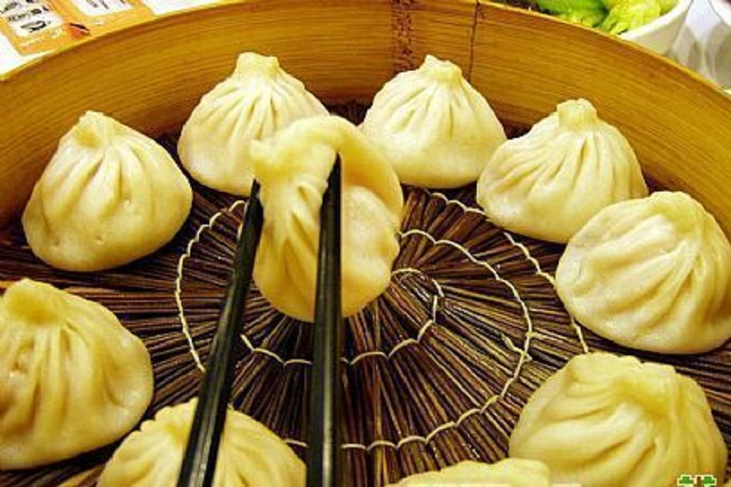

杭州美食-2




1、葱包桧儿
葱包桧儿是杭州特有风味的传统小吃。传说望仙桥畔王二油煎饼店炸“油炸桧”出了名，一时众起仿效，油炸桧店林立杭城。王二有时炸多了，一下子卖不出去，冷了又软又韧，味道不佳，更无人买。他对秦桧夫妇的心头之恨，还愤愤难平，就将冷油炸桧在热锅一烤，把烤熟的油炸桧同葱段卷入拌着甜面酱的春饼里，再用铁板压烤，烤到表皮呈金黄色，油炸桧“吱吱”发叫，王二方才解恨，他拿起来一吃，觉葱香可口，便取名叫“葱包桧儿”，一直流传至今。
Visit Site4、酥油饼
为杭州著名风味特产，因主要产于市区风吴山而得名。早在二、三百年前 即已驰名四方。清代著名小说《儒林外史》一书中即已提及，并作赞誉。酥油饼用上 等白面粉搀和白糖，用花生油煎制而成。因饼开蒙茸有如蓑衣，所以杭人又呼之为"蓑 衣饼"。饼色金黄，食时，先时细白糖粉，入口时，松脆可口，颇具风味。数百年来凡 登吴山者，均以一尝吴山酥油饼为快事。
Visit Site